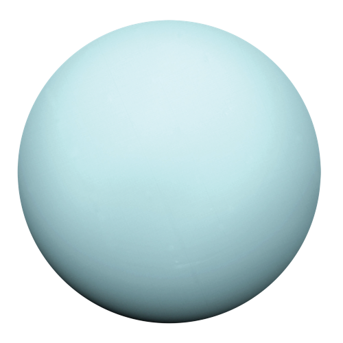

- 1. Urano é o sétimo planeta a partir do Sol em nosso sistema solar.
- 2. Ele é conhecido como um "gigante de gelo" devido à sua composição predominantemente de gases e gelo.
- 3. Urano possui uma atmosfera composta principalmente de hidrogênio, hélio e metano, que dá ao planeta sua coloração azul-esverdeada característica.
- 4. É um dos dois planetas no sistema solar que rodam de lado, o que significa que seu eixo de rotação está quase paralelo ao plano de sua órbita, resultando em estações extremas.
- 5. Urano tem anéis, mas eles são muito menos visíveis e impressionantes em comparação com os anéis de Júpiter e Saturno.
- 6. O planeta possui um conjunto único de 27 luas conhecidas, incluindo Titânia, Oberon, Umbriel, Ariel e Miranda.
- 7. Urano é o único planeta do sistema solar que não pode ser visto a olho nu sem o uso de telescópios.
- 8. Sua descoberta é creditada a William Herschel, que o avistou em 1781.
- 9. Urano tem um campo magnético inclinado e excêntrico, que é um dos mais estranhos do sistema solar.
- 10. A sonda Voyager 2 é a única espaçonave que visitou Urano até o momento, passando pelo sistema em 1986 e fornecendo dados valiosos sobre o planeta.
|

|